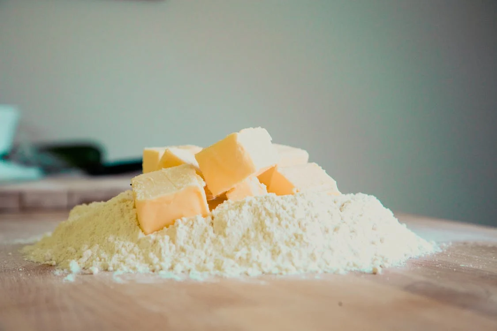

Blog

Salir a comer libre de gluten
Variedad de opciones, contaminación cruzada, strock disponible y demás variables que afectan la experiencia de salir a comer siendo celíaco.
Lee la nota completa

¿Diagnóstico o elección?
Un estudio que determina como debe ser tu alimentación el resto de tu vida. La condición genética y otros indicadores que acompañan el diagnóstico.
Lee la nota completa

El primer paso hacia una dieta libre de gluten
Una alimentación variada como la clave para ll dieta libre de glúten. Las dietéticas como aliadas para el reemplazo de harinas.
Lee la nota completa

Celiaquía en Argentina
La celiaquía en cifras y el marco regulatorio en nuestro país. ANMAT y el listado de alimentos libres de gluten.
Lee la nota completa

5 tips para tener una cocina libre de gluten
Gluten ¿Qué es? ¿Qué alimentos de mi alacena pueden contenerlo? Cómo evitar los riesgos y mantener una espacio seguro.
Lee la nota completa

Todo lo que tenes que saber si te diagnosticaron celiaquía
¿Qué es la enfermedad celíaca? Principales síntomas, procedimiento para el diagnóstico y tratamiento